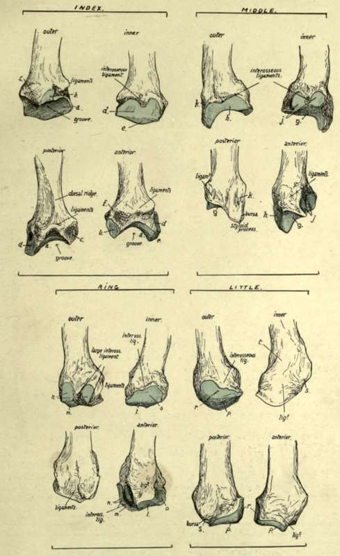
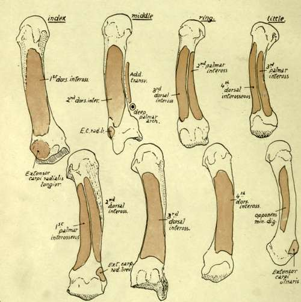
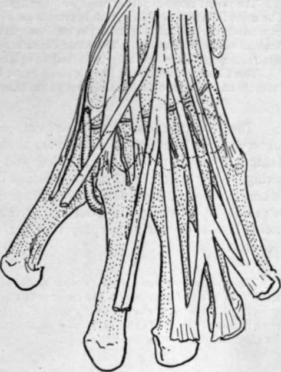

Separate Bones Of Metacarpus. Continued
Description
This section is from the book "The Anatomy Of The Human Skeleton", by J. Ernest Frazer. Also available from Amazon: The anatomy of the human skeleton.
Separate Bones Of Metacarpus. Continued
It is evident that no two of these bones are alike in their markings for interossei, and it is possible to put the bones in their right order from their shafts alone, provided that the sides to which they belong are known. Observe also that the nutrient foramina are on the radial side in the three inner bones, and on the ulnar side in the outer two : the canal descends in the first but ascends in the other metacarpals, so being in accord with the rule that the canal is directed away from the '.' growing end " of the bone, for there is normally only one epiphysis on these bones, and it forms the base of the first metacarpal but the distal ends of the others.
The inner side of the fifth shaft receives the insertion of the Opponens of the little finger : this belongs morphologically to the group of palmar interossei, being the ulnar belly of the metacarpal flexor of the finger, which has extended its insertion proximally from the phalanx to the metacarpal while its origin has grown round the flexor sheath on to the annular ligament.
Fig. 91.-Bases of the four inner metacarpals of left side. Outer, inner, back, and front views are given of each bone. The cartilage-covered articular surfaces are coloured blue, a, surface for trapezoid ; b, facet for trapezium ; c, insertion of Extens. C. radialis ; rf, surface for middle metacarpal ; e, surface for os. magnum ; /, insertion of Fl. C. rad. and anterior ligaments ; £, surface for os magnum ; h, surface for index metacarpal ; j, surface for fourth metacarpal ; k, insertion of Ext. C. rad. brev. ; I, surface for unciform ; m, surface for os magnum ; n, surface for middle metacarpal ; o, surface for fifth metacarpal ; p, surface for unciform ; r, surface for fourth metacarpal ; s, insertion of Ext. carpi ulnaris.
Fig. 92.-The four inner metacarpals, showing the attachments of the Interosseous muscles and of certain other muscles. The upper row represents the bones from the outer side, and the lower row shows their internal aspects.
A palmar ridge is seen running along each of the shafts, made by the meeting of the interosseous surfaces on the palmar aspect : it may be slightly displaced to the inner side in the fourth and fifth bones * as a result of their having a palmar interosseous on the radial side, but a displacement in the opposite direction is not apparent on the index metacarpal.
The ridge is widened in the middle metacarpal by the origin of Adductor transversus from it. On this bone, and on that of the Index, the ridges are not as a rule so clearly carried to the bases, but are interrupted by an ill-defined groove that marks the situation of the deep palmar arch : on their bases, proximal to this, the Adductor obliquus has part of its origin.
It is apparent from the markings for the interossei (Fig. 92) that these muscles form thick masses which practically cover in the bones on their palmar aspects and, with the Adductors in the outer part of the palm, separate them from the flexor sheath. Dorsally, however, the distal two-thirds or more of the shafts are not covered by the muscles, and here the shaft is broad and flat and in relation with the extensor tendons of the fingers.
A summary of the muscles that take origin from the different metacarpals, and the tendons inserted into them, may not be out of place here.
metacarpal. muscles. tendons.
First . Flexor brevis (deep head) . . Ext. ossis metacarp.
Opponens (insertion).
First dorsal interosseous. Second . First and second dorsal inteross. . Flexor carpi radialis.
First palmar inteross.. . . Extensor c. rad. long.
Adductor obliquus . . . Extensor c. rad. brev. Third . . Second and third dorsal inteross.. Flexor c. rad.
Adductor transversus . . . Ext. c. rad. brev.
Adductor obliquus. Fourth . . Third and fourth dorsal inteross.
Second palmar inteross. Fifth Fourth dorsal inteross. . . Extensor carpi ulnaris.
Third palmar inteross.
Opponens (insertion).
* Like the other characters described in these bones, these varieties should be studied in well-marked and good-sized male bones : they are not striking, or even apparent, in small and feeble bones. f.a. 8
Fig. 93.-To show the relation of the tendons, etc., on the dorsum to the underlying carpal bones and to each other. The radial artery and posterior carpal arch are also shown.
The radial flexor is partly fused with the ligaments in its attachment to the middle metacai pal. The main insertion of Ext. c. rad. brevior is on to the base of the styloid process, but a contiguous impression on the index metacarpal receives part of it : bursae lie under the two radial extensor tendons at their insertions. The ulnar flexor is not directly inserted into the metacarpus, but the piso-metacarpal ligaments may be looked on as a continuation of its tendon to the inner bones.
The Ulnar extensor may have a small bursa between its tendon and the proximal part of the tubercle on the inner and dorsal aspect of the base of the fifth metacarpal.
The heads are somewhat square-cut, rounded off in an antero-posterior direction. Observe that the articular surfaces are slightly more vertically extensive in front than behind in addition to being broader, and that they show a transverse constriction owing to the existence of the depressions on the sides of the head : the constriction is best marked in the index metacarpal and least apparent in the fifth. Each surface is prolonged proximally in front and at the sides into two cornua, on which the sesamoid bones or cartilages play that are found in the palmar capsular structures (see later).
These sesamoids are always present and well developed in the thumb, and frequently, if not usually, in the index finger on the outer side and in the little finger on the inner side, and corresponding differences in the size of the cornua can be noticed in the metacarpals. The sesamoids are more numerous in the foetus, especially on the radial side of the index and middle fingers, and on the ulnar side in the ring and little fingers.
The depressions on each side of the head have a facetted surface behind them, and to this also the lateral ligament of the joint is attached. The anterior part of the capsule is thickened and firmly attached to the base of the phalanx, but only by areolar tissue to the metacarpal, so that there is no very definite marking to be found for it on these bones.
The extensor expansion covers in the posterior aspect of the joint and takes the place of a capsule there. Thus the head of each bone may be said to be surrounded by ligamentous and fibrous structures : these are all connected together, but the mass can be analysed into its constituent parts as shown in Fig. 94.
1. The deepest structure is the proper capsule, which extends on the palmar aspect of the joint from one lateral hgament to the other : it has the sesamoid bones or cartilages when present embedded in it, and is firmly attached to the base of the phalanx, but lies loosely on the metacarpal, so that it does not hmit extension of the joint.
Each lateral ligament has an extensive attachment to the metacarpal (Fig. 94) and the phalanx, so that its front fibres become tight in extension and its posterior part in flexion : the interosseous tendons are partly attached to the lateral ligaments.
2. The transverse metacarpal hgament hes on the palmar surfaces of the capsules, a strong fibrous band stretching across the four inner joints and only indirectly attached by their capsules to the bones : its function is evidently to hmit divergence of the bones.
The interosseous tendons lie behind it, while the plane of the Lumbricales and digital vessels and nerves is in front of it.
3. The proximal end of each digital sheath (theca) lies on the transverse band, and thus thickens still more the structures in front of the joint.
The vessels and nerves pass down between the commencement of the sheaths.
4. The extensor expansion throws a fibrous covering downwards and forwards on each side of the joint, covering it in and passing over the lateral ligaments and base of phalanx : it has some attachment to these and to the interosseous tendons, so that the direct action of the extensor tendon on the finger is mainly to extend the first phalanx through this attachment.
Observe that the articular surface in the metacarpophalangeal joint of the thumb is flatter and broader but less extensive from before backwards than those of the other bones : associated with this is the much lessened range of flexion and practical absence of power of lateral movement in this joint. Its ligaments are the same with the exception of the transverse metacarpal band : the sesamoids are large and always present and the comparative slightness of the grooves for them depends on the sma'ler extent of the articular surface.
Continue to: